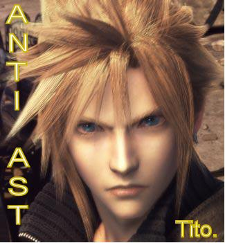

Forums galactiques > Assemblée Galactique : diplomatie officielle > Affront
Pages : 1
| tito4 Respect diplomatique : 6  15/11 ETU 19:41 | Score : 0 Détails Il y a maintenant longtemps de cela , une semaine bientot , le comandant imothep a ioniser la totalité d'une de mes flotte , il m'avait deja , lorsque que je debutait en tant que comandant attaqué , et donc volé , deux planetes . La premiere fois j'ai decidé de passer l'acte barbarique au silence , seulement cette fois ci j'ai demandé reparation mais je n'ai recu aucune reponse de mes MP. J'en conclus donc qu'il ne veux pas me rembourser mes pertes , meme si elles sont peut nombreuses . Je prend donc cela comme un affront et je tenait à le dire à l'assemblée car un tel acte me semble intolerable .
tito. Tito. | ||
| stradi Respect diplomatique : 211  15/11 ETU 21:02  | Score : 0 Détails Je t'invite moi le commandant stradi a dire la veritee car en cette periode d'elections nous sommes neutre au ppg.
Sauf si un de nos menbres est agresse et que la voik diplomatique n'est plus possible. Donc avant d'accuser les gens explique mieux ton pbs et si tu as raison je m'engage personnelement a te dedomager. Merci de ton attention. | ||
| Mac Polar II Respect diplomatique : 224  15/11 ETU 21:12 | Score : 0 Détails ahahah
un anti ast du nom de tito, c'est marrant non? | ||
| Imothep Respect diplomatique : 571  15/11 ETU 21:33 | Score : 0 Détails Roooh mon cher Tito, je me demande bien qui vous a demandé de lancer une nouvelle attaque ad hominem...
Je reçois également des attaques ioniques aux points 1 où je me trouve... Désolé mais actuellement des rumeurs parlent d'une apocalypse, et je protège mes systèmes. Si j'ouvrais un topic à chaque fois que je reçois un friendly fire ionique, on en sortirait plus. L'Assemblée n'est pas faite pour cela mon cher, et de plus je reçois de très nombreux MP, si je m'arretais à chaque commandant se plaignant d'un explorateur perdu, je ne m'en sortirais plus. Encore une fois, Stradi a montré sa bonne volonté, et je l'en remercie. Cordialement. | ||
| tito4 Respect diplomatique : 6 15/11 ETU 21:43 | Score : 0 Détails Je pensais avoir été clair dans l'exposé de mon probléme , mais on dirait que non c'est pourquoi je vais faire de mon mieux pour exposer les fait . A mes debut de comandant j'ai recu de l'aide de la part d'autre comandant , ainsi j'ai pu acquerir quelques planetes afin de pouvoir me developper , seulement apres deux jours le comandant Imothep à pris la liberté d'attaquer deux de mes planetes et je lui est , suite a cet evenement facheux , envoyé un message lui faisant pas de mon mecontentement , il a tres bien reagi a ce message et y a repondu , c'est pourquoi j'ai decidé de ne pas faire suite et donc je ne lui ai rien demandé . Il y a maintenant moin d'une semaine , j'ai essuyer une dizaine d'attaque ionique au point de coordonné 1 du systeme 10 , et toute ma flotte à ete éradiquée . Bien entendu , essayant de garder un calme intenable , je lui ai envoyé un message demandant le dedomagement de mes pertes , je n'ai recu qu'une reponse , et ce n'etait pas la reponse attendue car il me demandait sur quel point 1 j'avais eu des pertes car il en avait ionisé plusieurs , bien entendu je lui ai repondu , je n'ai pas eu d'autre message de sa part apres , je lui ai envoyé un autre message demandant reparation , et c'est avec le plus grand desaroi du monde qu'aucune reponse ne m'est parvenue . j'en ai donc conclut qu'il ne veux pas me repondre ,croyait il que j'allais laisser passer une nouvelle fois cet affront , sans rien dire . C'est pour ca que je m'adresse a l'assemblé , mes pertes sont minimes et c'est pour ca que l'affront en est d'autant plus grand et je ne suis pas interressé pas votre argents , c'est Imothep en personne qui me doit escuse et dedomagements , je ne plierai pas devant sont "pouvoir " je suis peut un qu'un petit comandant mais je prefere mourrir que laisser quelqun me marcher sur le pied sans rien dire .
La simple escuse des election ne me fera pas taire , c'est une vaine action de votre part , de plus je ne suis pas à vendre . Voila , vous comprendrez , j'espere , que mes pertes ne se limitent pas qu'a de simple degats materiel . Et donc voyez maintenant , l'etendue de mon probleme. respectueusement tito. | ||
| tito4 Respect diplomatique : 6 15/11 ETU 21:54 | Score : 0 Détails "Si j'ouvrais un topic à chaque fois que je reçois un friendly fire ionique, on en sortirait plus. L'Assemblée n'est pas faite pour cela mon cher, et de plus je reçois de très nombreux MP, si je m'arretais à chaque commandant se plaignant d'un explorateur perdu, je ne m'en sortirais plus"
Mon cher , si vous penser resoudre tous vos conflit avec de telles propos cela m'etonnerai si vous en resolviez beaucoup , et je vois que vous ne prennez pas en consideration les affronts que vous faites au petits comandants , c'est pourtant curieux mais maintenant de telles paroles ne m'etonne guere , de plus vous dites , je croit , que l'assemblée n'est pas faite pour ca , la encore , vous me traiter avec peut d'egard , vous aggraver nos relations , mais voyons peut etre que si ma position avait été 10eme alors dans ce cas vous auriez fait plus attention , parmi tous , et je pense que vous en avez en effet beaucoup , les MP que vous recevez . Voyez vous il y a une hierarchie chez certaine personnes , chez d'autres il y a des roles , a votre avis quelle est la difference entre ces deux choses ? si vous le la voyez pas alors vous ne comprendrez jamais pourquoi votre acte est plus grave que vous ne le penser . cordialement. tito | ||
| Imothep Respect diplomatique : 571 15/11 ETU 21:56 | Score : 0 Détails Non en général, et depuis 3 semmaines, je n'ai aucun conflit.
| ||
| tito4 Respect diplomatique : 6 15/11 ETU 23:13 | Score : 0 Détails maintenant vous en avez un ,
et je vous pose la question : pensez vous etre capable de le regler en toute diplomatie ou voulez vous profiter du fait de ma faiblesse pour que ce facheux contre temps ,qui survient lors des elections,soit reglé dans un bain de sang ? tito. | ||
| Alf Respect diplomatique : 0  15/11 ETU 23:53 | Score : 0 Détails Commandant Tito,
Permettez que j'apporte la médiation à ce conflit. Pouvez vous formuler, sans détour, ce que vous attendez exactement du Commandant Imothep. Merci. Commandant Alf. | ||
| tito4 Respect diplomatique : 6 16/11 ETU 10:12 | Score : 0 Détails je l'ai deja dit , je veux des escuses et le remboursement des pertes occasionnées lors de son attaque .
| ||
| etic Respect diplomatique : 307  17/11 ETU 09:05 | Score : 0 Détails Imothep, je ne vais pas me faire l'avocat du diable... mais avec tout les milliards que tu as, tu pourrais lui rembourser ses quelques frégates qu'il a. D'une part, cela ne te couterais pas grand chose et d'autre part, cela te donnerais un nvo visage... apres celui du traite et de pacifiste au belle parole, tu aurais celui de mecene au grand coeur et cela ne te ferais pas de mal...
Ah lala, la momie n'a pas fini de nous momifier... | ||
| tito4 Respect diplomatique : 6 17/11 ETU 13:40 | Score : 0 Détails Je n'ai rien recu de sa part , même pas un seul MP me disant qu'il ne souhaitait pas accéder à ma demande , je trouve que là ca dépasse les limites du supportable . Et aprés ,ce cher commandant ose dire qu'il est pour la protection des petits commandants , et une aide à leur developpements .
Pathetique ... tito. | ||
| tito4 Respect diplomatique : 6 18/11 ETU 17:09 | Score : 0 Détails Comandant Imothep , je vous declare que , en raison des election et d'un certain nombre de chose je retire ma declaration de guerre .
Je n'ai recu aucun dedomagement ni escuses de votre part , j'en conclut que vous etes un etre méprisable en deficite d'humanité . respectuesement. tito. |
Pages : 1
Forums galactiques > Assemblée Galactique : diplomatie officielle > Affront